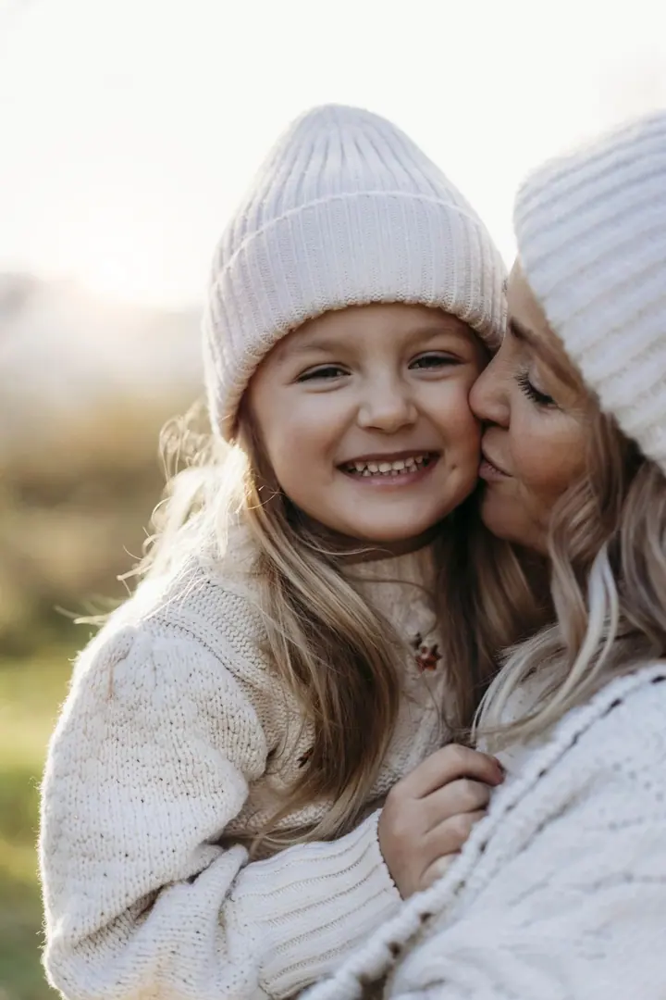

Rodina, děti, portrét
Focení rodin, dětí i vašich miláčků venku, kde se mění světlo a nikdo nikam nespěchá. Baví mě pohyb, smích, doteky a malé detaily, které k vám patří.

Jmenuji se Petra Mikulenčáková a fotím rodiny, děti, svatby i všechno mezi tím. Mám ráda místa, která vás na chvíli zpomalí, a chvíle, které nejdou úplně naplánovat.
Rezervovat termínTo, co kdysi začalo jako můj koníček, se postupně stalo mou prací. A hlavně něčím, co mě pořád baví, naplňuje a dává mi smysl. Odjakživa mě přitahovala kreativní tvorba: tavené sklo, kresba, malba i sochařství. Nakonec mě ale nejvíc okouzlila fotografie a grafický design, kterému jsem se věnovala i během studia v ateliéru grafiky a kresby.


Jsem maminkou tří dětí a možná právě díky nim vím, jak rychle některé okamžiky utečou. O to víc si vážím toho, že je můžu fotografií uchovat. Hledám krásu v obyčejných chvílích a ráda tvořím fotky, které mají svůj příběh.
Při focení nechávám věci plynout. Baví mě dobré světlo, nečekaný moment, smích a doteky. Chci, aby fotky působily přirozeně, živě a osobně a aby v nich bylo něco z vás.
Co fotím
Focení rodin, dětí i vašich miláčků venku, kde se mění světlo a nikdo nikam nespěchá. Baví mě pohyb, smích, doteky a malé detaily, které k vám patří.
Svatební den fotím přirozeně a bez dokonale naaranžovaných scén. Hledám skutečné momenty, atmosféru místa a lásku, kterou spolu prožíváte.
Sváteční focení pro celou rodinu nebo jen pro děti ve vánočně připravené scéně. Vzpomínka, ke které se budete každý rok rádi vracet.
Klidné focení období, které uteče rychleji, než čekáte. Ráda ho s vámi uchovám přirozeně a osobně.
Postup
Ve formuláři vyberte, o jaké focení máte zájem, a napište mi pár slov o sobě. Ozvu se vám a vše spolu probereme.
Společně vybereme místo, které vám sedí, a čas, kdy bude hezké světlo. Ráda poradím i s oblečením.
Nemusíte umět pózovat. Nechám vás být sami sebou a budu zachycovat to, co se mezi vámi děje přirozeně.
Z focení vyberu a pečlivě upravím ty nejlepší snímky a pošlu vám je, abyste se k nim mohli kdykoliv vracet.
Otázky
Vůbec ne. Nejde mi o dokonale naaranžované scény, ale o skutečné chvíle. Stačí být spolu, povídat si a smát se, zbytek nechte na mně.
Určitě. Ráda fotím rodiny, páry, děti i vaše miláčky. Patří k vám, tak ať jsou na fotkách také.
Pocházím z Huslenek a nejraději fotím venku, na místech, kde se mění světlo a není kam spěchat. Místo vždy domluvíme podle vás.
Napište mi přes formulář, o jaké focení máte zájem, a pošlu vám všechny podrobnosti.